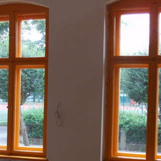

Naprawiamy okna i drzwi plastikowe, drewniane oraz aluminiowe

Uszczelniamy okna - regulujemy docisk uszczelek, zakładamy nowe lub wymieniamy
Montujemy rolety tradycyjne oraz typu "dzień-noc"

Zapewniamy wentylację pomieszczenia zakładając w oknach nawiewniki
Poddajemy renowacji okna drewniane, dachowe